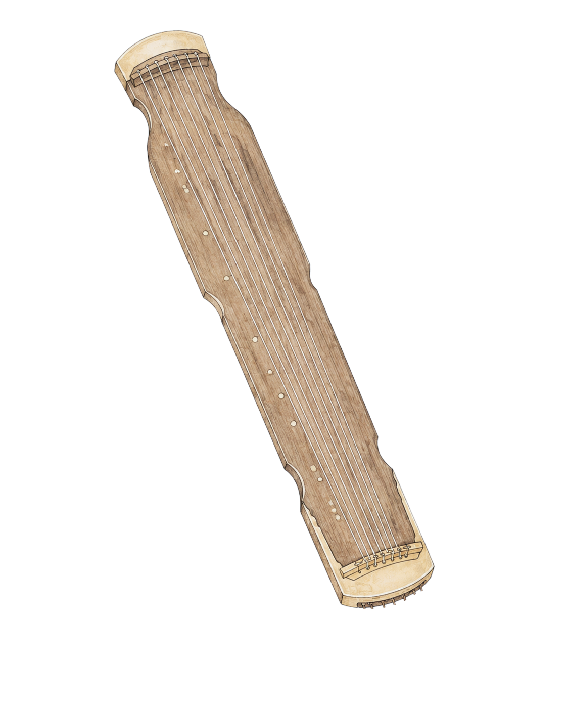
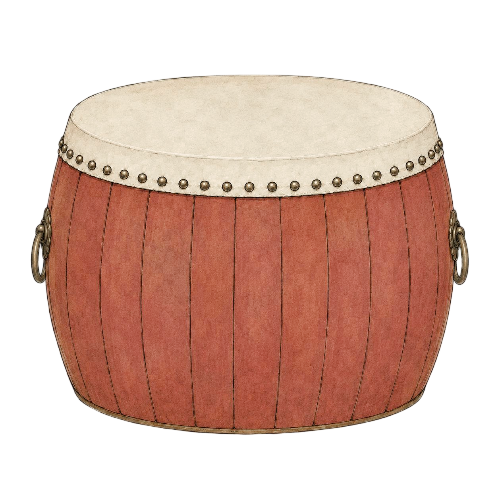
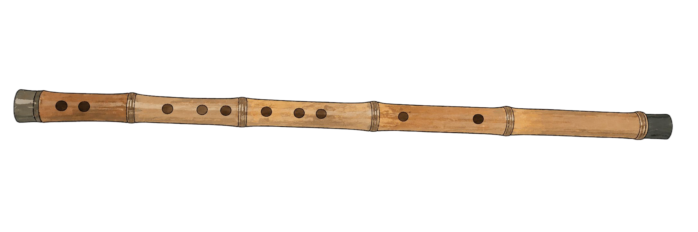

<!DOCTYPE html>
<html lang="zh-CN">
<head>
  <meta charset="UTF-8" />
  <meta name="viewport" content="width=device-width, initial-scale=1.0" />
  <title>乐器选择</title>
  <link rel="stylesheet" href="./site-nav/site-nav.css" />
  <style>
    @font-face {
      font-family: "FZLiShuLocal";
      src: url("./方正隶书_GBK.ttf") format("truetype");
      font-display: swap;
    }

    * {
      box-sizing: border-box;
    }

    html,
    body {
      margin: 0;
      width: 100%;
      min-height: 100%;
      overflow: hidden;
      background: #111;
      font-family: "FZLiShuLocal", "LiSu", "Microsoft YaHei", serif;
    }

    .site-header {
      position: relative;
      z-index: 20;
      height: 72px;
      display: flex;
      align-items: center;
      gap: clamp(58px, 8.8vw, 118px);
      padding: 0 clamp(42px, 5vw, 76px);
      background: #d7d7d7;
    }

    .nav-link {
      color: #050505;
      text-decoration: none;
      font-size: clamp(28px, 2.35vw, 36px);
      font-weight: 400;
      line-height: 1;
      white-space: nowrap;
    }

    .hero {
      position: relative;
      min-height: 100vh;
      background-image:
        linear-gradient(rgba(0, 0, 0, 0.7), rgba(0, 0, 0, 0.7)),
        url("./bg.jpg");
      background-size: cover;
      background-position: center;
    }

    .hero::after {
      content: "";
      position: absolute;
      inset: 0;
      pointer-events: none;
      background: radial-gradient(circle at 46% 48%, rgba(0, 0, 0, 0.04), rgba(0, 0, 0, 0.34));
    }

    .hero-inner {
      position: relative;
      z-index: 1;
      min-height: 100vh;
      display: grid;
      grid-template-columns: 150px minmax(0, 1fr);
      align-items: center;
      transition: grid-template-columns 520ms ease;
    }

    .hero-inner:has(.circle-sidebar:hover),
    .hero-inner:has(.circle-sidebar:focus-within),
    .hero-inner.is-expanded {
      grid-template-columns: min(470px, 36vw) minmax(0, 1fr);
    }

    .intro {
      max-width: 720px;
      padding: 0 24px;
      transform: translateY(-6px);
      transition: transform 520ms ease;
    }

    .hero-inner:has(.circle-sidebar:hover) .intro,
    .hero-inner:has(.circle-sidebar:focus-within) .intro,
    .hero-inner.is-expanded .intro {
      transform: translate(20px, -6px);
    }

    .intro h1 {
      margin: 0;
      color: #fff;
      font-size: clamp(24px, 2.45vw, 34px);
      font-weight: 400;
      line-height: 1.45;
      letter-spacing: 0;
      white-space: pre-line;
      text-shadow:
        0 2px 2px rgba(0, 0, 0, 0.9),
        0 0 10px rgba(0, 0, 0, 0.65);
    }

    .intro h4 {
      margin: 10px 0 0;
      color: #bc8b3bdb;
      font-size: clamp(15px, 1.3vw, 20px);
      font-weight: 400;
      line-height: 1.3;
      letter-spacing: 0.5px;
      text-shadow:
        0 2px 2px rgba(0, 0, 0, 0.9),
        0 0 8px rgba(0, 0, 0, 0.6);
    }

    .circle-sidebar {
      position: relative;
      height: 100%;
      min-height: 100vh;
      overflow: visible;
    }

    .circle-wheel {
      position: absolute;
      left: 0;
      top: 50%;
      width: 290px;
      height: 470px;
      transform: translateY(-50%);
      transform-origin: 90px 215px;
      animation: wheelRotate 18s linear infinite;
      transition: left 520ms ease, width 520ms ease, height 520ms ease;
    }

    .circle-sidebar:hover .circle-wheel,
    .circle-sidebar:focus-within .circle-wheel,
    .circle-sidebar.is-expanded .circle-wheel {
      left: -126px;
    }

    .circle-sidebar:has(.instrument-card:hover) .circle-wheel,
    .circle-sidebar:has(.instrument-card:focus-visible) .circle-wheel,
    .circle-sidebar.is-paused .circle-wheel {
      animation-play-state: paused;
    }

    .instrument-card {
      position: absolute;
      left: var(--small-x);
      top: var(--small-y);
      width: 28px;
      height: 28px;
      padding: 0;
      border: 0;
      border-radius: 50%;
      background: rgba(166, 166, 166, 0.6);
      cursor: pointer;
      transform: translate(-50%, -50%);
      display: grid;
      place-items: center;
      text-decoration: none;
      box-shadow:
        0 0 0 1px rgba(255, 232, 178, 0),
        0 0 0 0 rgba(224, 190, 112, 0);
      transition:
        left 520ms ease,
        top 520ms ease,
        width 520ms ease,
        height 520ms ease,
        transform 220ms ease,
        background 360ms ease,
        filter 220ms ease,
        box-shadow 360ms ease;
    }

    .circle-sidebar:hover .instrument-card,
    .circle-sidebar:focus-within .instrument-card,
    .circle-sidebar.is-expanded .instrument-card {
      left: var(--open-x);
      top: var(--open-y);
      width: 122px;
      height: 122px;
      background: #a6968e;
      box-shadow:
        0 0 0 1px rgba(255, 232, 178, 0.18),
        0 0 28px 8px rgba(224, 190, 112, 0.55);
    }

    .instrument-card:hover,
    .instrument-card:focus-visible {
      outline: none;
      transform: translate(-50%, -50%) scale(1.12);
      filter: brightness(1.08);
      box-shadow:
        0 0 0 2px rgba(255, 232, 178, 0.4),
        0 0 34px 10px rgba(236, 198, 108, 0.72);
    }

    .instrument-card img {
      position: absolute;
      left: 50%;
      top: 50%;
      display: block;
      width: 82%;
      height: 82%;
      object-fit: contain;
      object-position: center;
      --img-x: 0px;
      --img-y: 0px;
      opacity: 0;
      pointer-events: none;
      filter: drop-shadow(0 5px 7px rgba(0, 0, 0, 0.28));
      animation: imageKeepUpright 18s linear infinite reverse;
      transition: opacity 260ms ease 150ms;
    }

    .circle-sidebar:has(.instrument-card:hover) .instrument-card img,
    .circle-sidebar:has(.instrument-card:focus-visible) .instrument-card img,
    .circle-sidebar.is-paused .instrument-card img {
      animation-play-state: paused;
    }

    .circle-sidebar:hover .instrument-card img,
    .circle-sidebar:focus-within .instrument-card img,
    .circle-sidebar.is-expanded .instrument-card img {
      opacity: 1;
    }

    .instrument-card.qin img,
    .instrument-card.di img {
      width: 116%;
      height: 116%;
    }

    .instrument-card.qin img {
      --img-x: 0px;
      --img-y: 0px;
    }

    .instrument-card.sheng img {
      width: 72%;
      height: 88%;
      --img-x: 0px;
      --img-y: 0px;
    }

    .instrument-card.drum img {
      width: 90%;
      height: 90%;
      --img-y: 0px;
    }

    .instrument-card.xun img {
      width: 86%;
      height: 96%;
      --img-y: 0px;
    }

    .instrument-card.di img {
      --img-x: 0px;
      --img-y: 0px;
    }

    @keyframes wheelRotate {
      from {
        transform: translateY(-50%) rotate(0deg);
      }
      to {
        transform: translateY(-50%) rotate(360deg);
      }
    }

    @keyframes imageKeepUpright {
      from {
        transform: translate(-50%, -50%) translate(var(--img-x), var(--img-y)) rotate(0deg);
      }
      to {
        transform: translate(-50%, -50%) translate(var(--img-x), var(--img-y)) rotate(360deg);
      }
    }

    .sr-only {
      position: absolute;
      width: 1px;
      height: 1px;
      padding: 0;
      margin: -1px;
      overflow: hidden;
      clip: rect(0, 0, 0, 0);
      white-space: nowrap;
      border: 0;
    }

    @media (max-width: 760px) {
      body {
        overflow: auto;
      }

      .site-header {
        height: 64px;
        padding: 0 18px;
        gap: 30px;
        overflow-x: auto;
      }

      .nav-link {
        font-size: 25px;
      }

      .hero,
      .hero-inner,
      .circle-sidebar {
        min-height: 100vh;
      }

      .hero-inner {
        grid-template-columns: 92px minmax(0, 1fr);
      }

      .hero-inner:has(.circle-sidebar:hover),
      .hero-inner:has(.circle-sidebar:focus-within),
      .hero-inner.is-expanded {
        grid-template-columns: 210px minmax(0, 1fr);
      }

      .circle-wheel {
        width: 210px;
        height: 360px;
      }

      .instrument-card {
        width: 24px;
        height: 24px;
      }

      .circle-sidebar:hover .instrument-card,
      .circle-sidebar:focus-within .instrument-card,
      .circle-sidebar.is-expanded .instrument-card {
        width: 82px;
        height: 82px;
      }

      .intro {
        padding-right: 16px;
      }

      .intro h1 {
        font-size: 21px;
      }
    }
  </style>
</head>
<body>
  <main class="hero page">
    <section class="hero-inner" aria-label="中国古代器乐乐器选择页">
      <aside class="circle-sidebar" aria-label="乐器圆形边栏">
        <div class="circle-wheel">
          <a
            class="instrument-card qin"
            data-instrument="qin"
            style="--small-x: 90px; --small-y: 183px; --open-x: 152px; --open-y: 30px;"
            href="#"
            aria-label="选择琴"
          >
            
            <span class="sr-only">琴</span>
          </a>

          <a
            class="instrument-card sheng"
            data-instrument="sheng"
            style="--small-x: 120px; --small-y: 205px; --open-x: 286px; --open-y: 215px;"
            href="#"
            aria-label="选择笙"
          >
            
            <span class="sr-only">笙</span>
          </a>

          <a
            class="instrument-card drum"
            data-instrument="gu"
            style="--small-x: 109px; --small-y: 241px; --open-x: 152px; --open-y: 400px;"
            href="#"
            aria-label="选择鼓"
          >
            
            <span class="sr-only">鼓</span>
          </a>

          <a
            class="instrument-card xun"
            data-instrument="xun"
            style="--small-x: 71px; --small-y: 241px; --open-x: -68px; --open-y: 328px;"
            href="#"
            aria-label="选择埙"
          >
            
            <span class="sr-only">埙</span>
          </a>

          <a
            class="instrument-card di"
            data-instrument="di"
            style="--small-x: 60px; --small-y: 205px; --open-x: -68px; --open-y: 102px;"
            href="#"
            aria-label="选择笛"
          >
            
            <span class="sr-only">笛</span>
          </a>
        </div>
      </aside>

      <article class="intro">
        <h1 id="sectionText"></h1>
        <h4 id="sectionHint"></h4>
      </article>
    </section>
  </main>

  <script>
    const params = new URLSearchParams(window.location.search);
    const requestedSection = params.get("section") || "yanwu";

    const sectionConfig = {
      yanwu: {
        text: "由材入器，由器入声，见古乐生成之本。",
        hint: "From materials to instruments, from instruments to sound, witness the roots of ancient music.",
        entry: "../1.1制作/index.html"
      },
      guanxiang: {
        text: "展卷寻音，于丹青人物间听见旧时声色。",
        hint: "Unfurl the scroll and seek the sound; among painted figures, hear the voices and colors of old times.",
        entry: "../2.1部件桑基图/index.html"
      },
      biannian: {
        text: "依岁月为序，溯其源流，观其兴替。",
        hint: "Following the order of years, trace its origins and transformations, and observe its rise and decline.",
        entry: "../3.1地域流派/index.html"
      }
    };

    const instruments = {
      sheng: "笙",
      gu: "鼓",
      qin: "琴",
      di: "笛",
      xun: "埙"
    };

    const instrumentRouteMap = {
      sheng: {
        folder: "笙",
        regionInstrument: "sheng"
      },
      gu: {
        folder: "鼓",
        regionInstrument: "drum"
      },
      qin: {
        folder: "琴",
        regionInstrument: "qin"
      },
      di: {
        folder: "笛",
        regionInstrument: "dizi"
      },
      xun: {
        folder: "埙",
        regionInstrument: "xun"
      }
    };

    const section = sectionConfig[requestedSection] ? requestedSection : "yanwu";
    const currentConfig = sectionConfig[section];

    const isLocalRegionPreview = () => {
      const protocol = window.location.protocol || "";
      const hostname = window.location.hostname || "";
      return protocol === "file:" || hostname === "127.0.0.1" || hostname === "localhost";
    };

    const getInstrumentTarget = (sectionKey, instrumentKey) => {
      const routeConfig = instrumentRouteMap[instrumentKey] || instrumentRouteMap.sheng;

      if (sectionKey === "yanwu") {
        return `../1.1制作/${routeConfig.folder}/index.html?instrument=${encodeURIComponent(
          instrumentKey
        )}`;
      }

      if (sectionKey === "guanxiang") {
        return `../2.1部件桑基图/${routeConfig.folder}/index.html?instrument=${encodeURIComponent(
          instrumentKey
        )}`;
      }

      const regionInstrument = encodeURIComponent(routeConfig.regionInstrument);
      if (isLocalRegionPreview()) {
        return `http://127.0.0.1:4173/?instrument=${regionInstrument}`;
      }

      return `../3.1地域流派/dist/index.html?instrument=${regionInstrument}`;
    };

    const sectionText = document.getElementById("sectionText");
    const sectionHint = document.getElementById("sectionHint");
    const circleSidebar = document.querySelector(".circle-sidebar");
    const heroInner = document.querySelector(".hero-inner");
    const instrumentCards = document.querySelectorAll(".instrument-card");

    document.body.dataset.section =
      section === "guanxiang" ? "observe" : section === "biannian" ? "chronicle" : "study";
    document.title =
      (section === "guanxiang" ? "观象" : section === "biannian" ? "编年" : "研物") +
      " - 中国古代器乐";
    sectionText.textContent = currentConfig.text;
    sectionHint.textContent = currentConfig.hint;

    const expandSidebar = () => {
      circleSidebar.classList.add("is-expanded");
      heroInner.classList.add("is-expanded");
    };

    const collapseSidebar = () => {
      circleSidebar.classList.remove("is-expanded");
      heroInner.classList.remove("is-expanded");
    };

    circleSidebar.addEventListener("pointerenter", expandSidebar);
    circleSidebar.addEventListener("pointerleave", collapseSidebar);
    circleSidebar.addEventListener("focusin", expandSidebar);
    circleSidebar.addEventListener("focusout", (event) => {
      if (!circleSidebar.contains(event.relatedTarget)) {
        collapseSidebar();
      }
    });

    instrumentCards.forEach((card) => {
      const instrumentKey = card.dataset.instrument;
      const target = getInstrumentTarget(section, instrumentKey);

      card.href = target;
      card.setAttribute("data-target", target);
      card.setAttribute("title", instruments[instrumentKey]);
      card.addEventListener("pointerenter", () => circleSidebar.classList.add("is-paused"));
      card.addEventListener("pointerleave", () => circleSidebar.classList.remove("is-paused"));
      card.addEventListener("focus", () => circleSidebar.classList.add("is-paused"));
      card.addEventListener("blur", () => circleSidebar.classList.remove("is-paused"));
      card.addEventListener("click", (event) => {
        event.preventDefault();
        window.location.href = target;
      });
    });

    if (window.location.hash === "#open") {
      expandSidebar();
    }
  </script>
  <script src="./site-nav/site-nav.js"></script>
</body>
</html>
